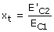
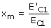

Energía cinética transferida y mantenida Considera un cuerpo 1 con energía cinética EC1
que choca con otro cuerpo 2 en reposo. Se define fracción de energía transferida (xt) al cociente de la energía cinética del cuerpo 2 tras el choque entre la energía cinética del cuerpo 1 antes del choque:  Se define fracción de energía mantenida (xm) al cociente de las energías cinéticas del cuerpo 1 después y antes del choque:  Si el choque es elástico se cumple: xt + xm = 1 y si no es elástico: 1 - (xt + xm) = xp, siendo xp la fracción de energía cinética perdida |